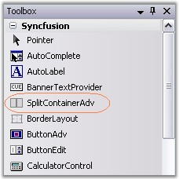
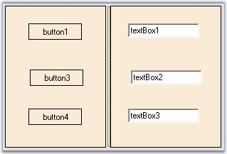
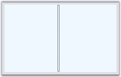

This section will give a step-by-step procedure to design a SplitContainerAdv control through designer and also through programmatical approach.
To create and customize the SplitContainerAdv through designer,
· Open a new Visual C# or VB.NET application in Visual studio.
· Drag-and-drop a SplitContainerAdv control object from the toolbox onto the form and resize it to the desired dimension.

Figure 416: SplitContainerAdv in Toolbox
· Drag and drop the desired controls on to the panels.
· Run the application.

Figure 417: SplitContainerAdv with Child Controls
See Also
To create a SplitContainerAdv control programmatically,
· Open a new Visual C# or VB.NET application in Visual Studio.
· Add the Syncfusion assemblies Shared.Base and Tool.Windows.
· Declare the SplitContainerAdv control.
|
[C#]
private Syncfusion.Windows.Forms.Tools.SplitContainerAdv splitContainerAdv1; |
|
[VB.NET]
Private splitContainerAdv1 As Syncfusion.Windows.Forms.Tools.SplitContainerAdv |
· Initialize the control and add it in your form.
|
[C#]
this.splitContainerAdv1 = new Syncfusion.Windows.Forms.Tools.SplitContainerAdv(); this.Controls.Add(this.splitContainerAdv1); |
|
[VB.NET]
Me.splitContainerAdv1 = New Syncfusion.Windows.Forms.Tools.SplitContainerAdv() Me.Controls.Add(Me.splitContainerAdv1) |
· If required customize the control's look and feel.
|
[C#]
this.splitContainerAdv1.BackColor = System.Drawing.Color.AliceBlue; this.splitContainerAdv1.Location = new System.Drawing.Point(64, 48); this.splitContainerAdv1.Size = new System.Drawing.Size(224, 136); this.splitContainerAdv1.SplitterDistance = 47; |
|
[VB.NET]
Me.splitContainerAdv1.BackColor = System.Drawing.Color.AliceBlue Me.splitContainerAdv1.Location = New System.Drawing.Point(64, 48) Me.splitContainerAdv1.Size = New System.Drawing.Size(224, 136) Me.splitContainerAdv1.SplitterDistance = 47 |
· Run the application. You will see the SplitContainerAdv with two panels in it as shown below.

Figure 418: SplitContainerAdv Created Programmatically